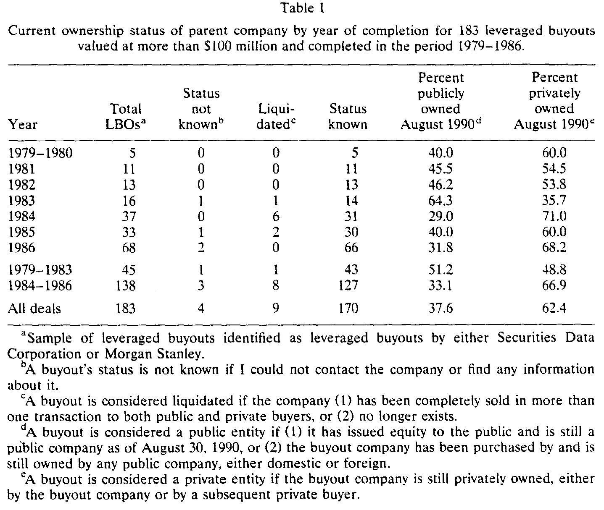
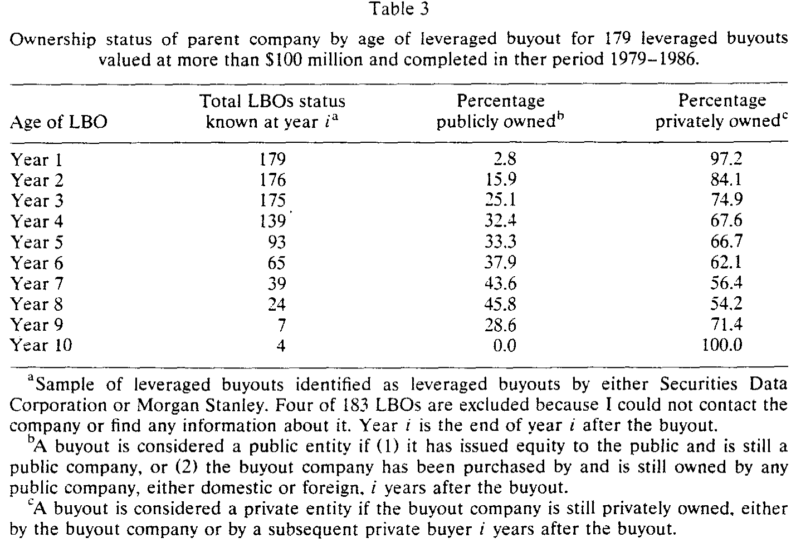
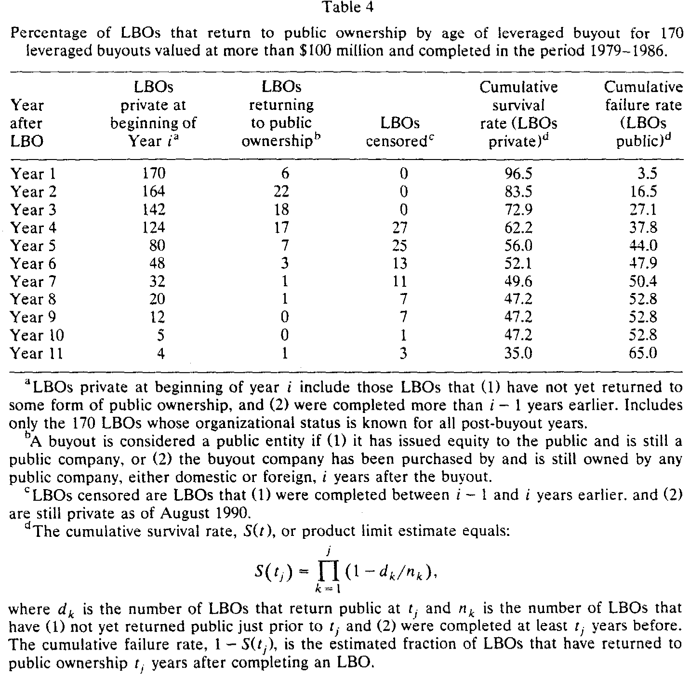
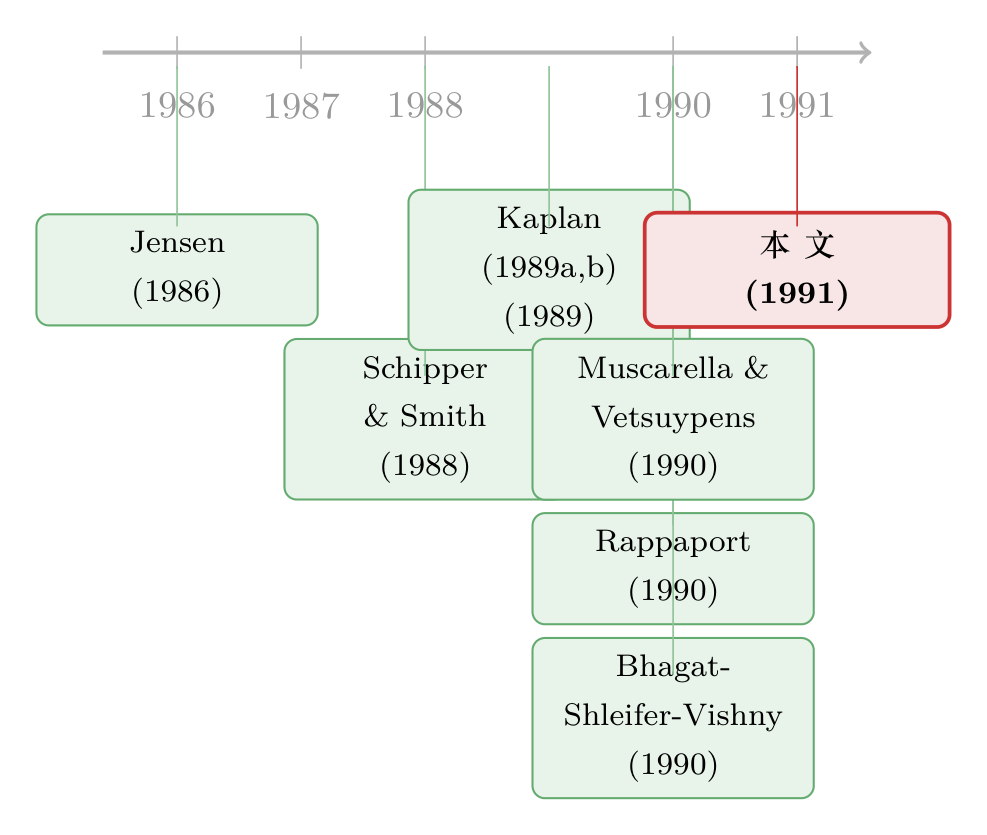

LBO 到底是「速战速决」还是「从此私有」？——一份关于「私有化能撑多久」的体检报告
本文读的是 Kaplan (1991, Journal of Financial Economics)：作者追踪了 1979–1986 年间 183 桩交易额超过 1 亿美元的大型杠杆收购，直到 1990 年 8 月。结论一句话——典型的 LBO 既不「短命」、也不「永生」：到 1990 年仍有 62% 私有，而它们保持私有的（无条件）中位数时间是 6.82 年。换句话说，杠杆收购更像一座「桥」，横跨在两段公开上市之间。
1 引言：一桩公案，两种命运
上世纪 80 年代的美国资本市场，发生了一件后来被反复书写的事：大量上市公司和它们的分部，通过 杠杆收购 (leveraged buyout, LBO) 退出了公开市场。规模有多夸张？1979 年这门生意只有 $1.4 billion，到 1988 年膨胀到了 $77 billion。一时间，「公开公司是不是要被这种新组织形式取代」成了学界和华尔街都绕不开的话题。
然而，热闹归热闹，LBO 这个东西其实一直没被看懂。最核心的争论甚至是一个看似很「土」的问题：这些被收购、被加满杠杆、被管理层重新攥在手里的公司，到底能活多久？
这个问题听上去像是茶余饭后的八卦，但它其实是一把钥匙——你对「LBO 能撑多久」的判断，直接决定了你相信「LBO 的价值从何而来」。
首先，我们得把吵架的几方请上台。
一派是 Jensen (1989) 的「公开公司的黄昏」。在他看来，LBO 是一种优于公开公司的组织形式：它用三样东西治好了低增长行业里 自由现金流 (free cash flow) 被乱花的病——(1) 高到债务/总资本比超过 85% 的债务，逼着公司把现金吐出来还本付息；(2) 管理层手里那一大块股权；(3) 一个被他称作 主动投资者 (active investor) 的 LBO 发起人，亲自操盘、持有多数股权、控制董事会。如果 Jensen 是对的，那 LBO 就应该长期保持私有；即便日后重新上市，债务也该还高高地挂着，股权也该还牢牢攥在管理层和投资者手里。（关于自由现金流这条主线，可参见《现金为什么一定要「还」出去？——四十年后，重读 Jensen 的自由现金流》。）
接着，一个自然的补充来自 税 这条线。Kaplan (1989a) 与 Schipper and Smith (1988) 指出，买断债务的利息可抵税，本身就是价值的一个重要来源——而这块抵税盾值多少钱，取决于那身高杠杆维持多久。债务若是永久的，比只撑两三年就还掉值钱得多。所以「长期维持高债务」同样和「税收驱动」相容。区别在于：税收理论对股权归谁不作预言。
然后，反方登场了。Rappaport (1990) 不同意 Jensen，他干脆把自己那篇文章叫做「公开公司的持久力」（与 Jensen「公开公司的黄昏」针锋相对）。他的逻辑是：债务的纪律和集中的所有权，固然能管住人，却也带来了不灵活、不流动、风险过度集中的代价。更要命的是，典型的主动投资者花的是外部投资人的钱，这些人指望五到十年内拿回本金。于是 Rappaport 断言：买断生来就是过渡性的组织。
Rappaport 没有明说，但他的立场和另一个更形象的说法是一致的——把 LBO 看成一剂 「休克疗法」(shock therapy)。买断的激励逼着管理层砍掉烂投资、卖掉闲置资产、死盯现金流；可这些动作大多是一次性的。做完之后，激励能榨出的好处自然变小，等到不灵活、不流动、风险集中的成本超过了继续维持激励的收益，公司就该回到公开市场。如果是这样，LBO 应该很快回归上市，而且越大的买断越该回归（因为管理层在大盘子上扛的风险更重）。
还有第四种声音。Bhagat, Shleifer, and Vishny (1990) 发现，敌意收购的资产 72% 在三年内被卖给了相关行业的买家（战略买家）；对他们样本里那 6 桩敌意 LBO，这个比例是 43%。如果 LBO 也大规模、快速地把资产卖给同业，那价值来源就既不是 Jensen 的激励、也不是税盾、更不是 Rappaport 的休克疗法，而是买卖双方的协同、市场势力，或者买家愿意溢价。
四种理论，四种命运预言。问题是——到底哪个对？
注意这里的精妙之处：四派说的不是同一个变量。Jensen 关心「私不私有 + 股权归谁」，税收理论只关心「债高不高」，Rappaport 关心「回归得快不快」，Bhagat 等关心「资产卖没卖给同业」。Kaplan 这篇论文的聪明，正在于他不去空谈机制，而是先把『LBO 现在到底是什么状态』这件最基本的事，老老实实数清楚——然后让数据去和每一种预言对质。
2 数据：把 183 家公司一家一家「打电话问到底」
这篇论文的力气，几乎全花在了一个又笨又硬的活儿上：追踪。
样本是 Securities Data Corporation (SDC) 或 Morgan Stanley 认定为 LBO、且在 1979–1986 年间完成的交易。两个关键筛选：(1) 排除 1986 年后完成的，以保证每桩买断至少有 3.67 年时间去「改变组织形态」；(2) 只保留交易额超过 $100 million 的大买断——因为大公司更容易查到状态。作者很坦白地承认，这第二条会偏向于「回归上市」：买断越大，管理层承担的风险越重，越可能想退出。
最后得到 183 家公司，完成时合计估值 $83.0 billion。同期 W.T. Grimm 的 Mergerstat Review 报告的「going-private + 单位管理层买断」总额是 $92.2 billion——也就是说，这个样本覆盖了那几年里相当大一块的交易金额。

Table 1
那「现在是什么状态」从哪儿查？作者用了 Lotus 的 Datext 数据库、NEXIS、从买断当年到 1990 年 8 月的《华尔街日报》，以及能拿到的 SEC 文件。只要可能，就直接打电话给公司的财务主管或审计长去核实。 他要确认三件事：原始交易的日期和金额、买断后有没有卖资产（卖给谁、什么形态、多少钱）、以及公司现在的所有权状态。
这是一篇典型的「鞋底磨破」的实证论文——没有花哨的模型，价值全在数据本身的可信度上。
3 核心发现：62% 还私有，但中位数只撑了 6.82 年
3.1 先看「现在」：62% 仍是私有
把 183 家公司分成四类：查不到状态的、已清算的、仍私有的（含破产保护中的）、已公开的。179 家能查到信息，其中 9 家形态「暧昧」（要么倒闭消失、要么被分拆卖给了公私两类买家），剩下 170 家有明确的 1990 年 8 月状态。
结果是这篇论文的第一根支柱：截至 1990 年 8 月，170 家中 62.4%（106 家）仍然私有。另外 37.6%（64 家）已公开——其中 13.5%（23 家）是独立上市公司，24.1%（41 家）被别的上市公司买走了（国内或国外）。
这个数字本身已经在打 Rappaport 一记耳光：如果买断真是「速战速决」的过渡组织，怎么会有六成在十来年后还私有着？
但这里有个陷阱：晚到 1986 年完成的买断，只有 3.67 年来改变形态，而 1979 年的有 11 年以上。如果 LBO 真是寿命不定的过渡组织，那早期的买断里私有的应该更少。数据大体符合这个方向——1983 年前完成的只有 48.8% 还私有，1983 年后则接近 67%。但这个模式并不单调：1983 年完成的不到 36% 还私有，1981 年完成的却有近 55%。
3.2 再看「资产」：会不会是卖给上市公司了？
一个自然的质疑是：万一这些公司把大量资产剥离卖给了上市公司，那「公司本身还私有」就是个假象。
于是作者把口径从「公司」换成「资产」，按价值加权算出每家公司有多少比例的资产仍是私有的（卖掉的资产用售价加权，没卖的用经营利润、账面资产或销售额这类会计数加权）。调整之后，私有资产的比例只从 62.4% 轻微降到 59.1%——而且因为没扣除买断后买回的公开资产，这 59.1% 还是个下界。
资产口径和公司口径几乎一致，说明「资产被大举卖给上市公司」这个幻象并不存在。Bhagat 等人那种「72% 资产三年内卖给同业」的剧情，在大型 LBO 里没有重演。
3.3 真正关键的一步：把「现在」换成「事件时间」
但真正关键的一步，在于换一个看问题的坐标。
前面的百分比都是按「完成年份」排的。作者接着把它按买断后的年龄重排——也就是看「事件时间」（event time）里，第 i 年时还有多少比例私有。这相当于把所有公司的「出生时刻」对齐到原点，再看它们逐年的存活。

Table 3
结果很干净：从买断后第 1 年到第 8 年，私有比例从 97.2% 单调下降到 54.2%。三年后已有刚过 25% 重新公开，到第八年升到近 46%。这条单调下行的曲线，给「典型买断既不短命也不永生」提供了第一份直接证据。
3.4 staying power：那个 6.82 年
到这里，论文要回答它标题里那个词了——staying power，私有化的「持久力」到底有多强？
这里有个统计上的麻烦：样本里大多数 LBO 到 1990 年 8 月还私有着。它们什么时候会回归上市？我们不知道。在生存分析的语言里，这叫 删失 (censored) 观测——你只知道它「至少活了这么久」，不知道它最终活多久。如果只拿那些已经回归的公司去算平均时间，会严重低估真实寿命。
先看有条件的那部分：在能全程追踪的 170 家里，差不多 45%（76 家）在某个时点回归了公开——其中 42 家通过增发股票上市，34 家被上市公司买走。这 76 家有条件于回归的私有时间，中位数只有 2.63 年，平均 2.85 年。这和 Muscarella and Vetsuypens (1990) 对 76 家「反向 LBO」算出的中位 2.42、平均 2.89 年高度一致。

Table 4
但「已经回归的公司只撑了 2.63 年」这句话极具误导性——它只统计了那些已经死掉的，幸存者全被忽略了。要把删失观测的信息用上，作者请出了 Kaplan–Meier（乘积极限）估计量。这是全文最核心的一个方程：
它的直觉，其实就是把「活到第 j 年」拆成一连串「在每个时点都没死」的条件概率连乘：
$$ S(t_j) = \prod_{k=1}^{j} \left(1 - \frac{d_k}{n_k}\right) $$
每一项 \(1 - d_k/n_k\) 是「在 \(t_k\) 这个时点、给定活到这之前、没有回归公开」的条件概率；\(d_k/n_k\) 就是该时点的 风险率 (hazard)。妙处在于分母 \(n_k\) 只数那些「真正还在风险中」的公司——一家删失的公司在它被删失之前一直贡献于分母，被删失之后就悄悄退出，既不算死、也不再拖累分子。于是删失观测里那点「至少活了这么久」的信息，被干净地利用了起来。这些估计可视为极大似然估计 [见 Kalbfleisch and Prentice (1980) 第 1 章]。而 \(1 - S(t)\)，就是「回归公开」这件事的累积分布函数。
把这台机器开起来，答案出来了：回归公开的中位生存时间在六到七年之间，点估计是 6.82 年。 即便假设最后一个观测不是删失的、最老的那家在 1990 年 9 月就回归，估计的均值也有 6.80 年（标准误 0.36）；而因为最后一个观测确实是删失的，这个均值其实还是向下偏的。
这就是「staying power」的量级：典型 LBO 保持私有的中位时间接近 7 年，比 LBO 协会们号称的「三到五年套现目标」要长。值得一提的是，回归上市并不是套现的唯一途径——LBO 还能通过再次加杠杆（第二次 LBO）让投资者退出。把再加杠杆也算进来，近 60% 的买断以某种方式套现了，乘积极限估计的中位数是 4.02 年，几乎正好落在「三到五年」目标的正中央。
3.5 一个有意思的细节：12 家「二进宫」
还有一处反转值得停一下。前面 45% 回归公开，和 3.1 节那个「62% 仍私有」之间，差额是怎么回事？
原因是：76 家回归公开的公司里，有 12 家后来又私有了一次。其中 9 家是独立上市公司、又做了第二次 LBO——这强烈暗示着，对它们而言公开上市并不是最优状态。这 12 家在重新私有前平均当了 2.34 年（中位 2.46 年）上市公司。
换句话说，前面所有的百分比都是 路径无关 (path-independent) 的——它们只看「现在是什么」，不管「怎么走到这一步」。而这 12 家「私有→公开→又私有」的公司提醒我们：所有权形态不是一条单行道，它会来回横跳。
3.6 duration dependence：两种买断的指纹
最后，同一份数据还能问一个更深的问题：回归公开的可能性，是随时间上升还是下降？这叫 久期依赖 (duration dependence)。
论文的发现是：回归公开的风险率在买断后第 2 到第 5 年最大且大致恒定，之后略降，再之后又大致恒定。作者给了一个漂亮的解读——这条形状可以读成两类买断的叠加：一类是 Rappaport 式的「休克疗法」型，做完一次性改造就早早回归；另一类是 Jensen 式的「长期激励」型，能撑很久。市场上不是只有一种 LBO，而是两种动机的混合体。
4 资产卖给同业了吗？——一个被放回原位的配角
讲到这里，主线已经清楚了：LBO 既不短命也不永生。但论文还顺手收拾了 Bhagat 等人留下的那个问题——资产到底有多大比例被卖给了相关行业的买家？
答案是「有，但不是主角」。29% 的 LBO 公司、34% 的原始 LBO 资产，最终落在了「拥有其他经营资产的公司」手里。这远低于 Bhagat 等人对敌意收购报告的 72%（仅三年后），也低于他们对 6 桩敌意 LBO 报告的 43%。更重要的是，从我样本里资产出售的时间模式外推，典型买断会保持独立超过 15 年。
这就和 Bhagat 等人对敌意收购的结论分道扬镳了：在那里，「激励密集型组织在长期里无关紧要」；而在大型 LBO 这边，长期激励确实在解释价值增加中扮演了角色。资产出售是配角，不是发动机。
5 横截面：谁更容易回归公开？
论文最后看了横截面的差异，三条都偏「反直觉」，而且都在敲打某些流行叙事：
(1)交易越大，回归公开的概率只是温和地更高——说明 Rappaport 强调的「管理层风险承担」只起了个中等作用，没那么决定性；(2)由知名 LBO 协会（也就是 Jensen 文章的主角们）发起的买断，并不比别的买断更容易保持私有；(3)分部买断和上市公司买断，在当前公私状态上没有显著差异。
第二条尤其有意思：人们总以为「专业 LBO 机构操盘的买断更能长期私有」，数据说不一定。
论文也留了一个诚实的尾巴：样本里大多数 LBO 完成后头几年赶上了经济扩张，而 1986 年后完成、被本文排除在外的那些买断，要面对的是 1990 年走弱的经济，外加 Kaplan and Stein (1991) 指出的「1986–1988 年买断定价和财务结构更激进」。激进的杠杆撞上走弱的经济会怎样，本文回答不了——这是个「开放且有趣」的问题。
6 文献脉络
把这条线捋一捋，会看到一个很清晰的演进。
起点是 Jensen (1986) 那篇奠基性的「自由现金流的代理成本」——它给「为什么要用债务和集中所有权去管住经理人」提供了理论母体。随后 Jensen (1988, 1989) 把这套逻辑推到极致，宣告「公开公司的黄昏」，把 LBO 抬举为优越的组织形式。
与此并行的是税与经营两条实证线。Kaplan (1989a) 量化了管理层买断里税收作为价值来源的分量，Kaplan (1989b) 和 Smith (1990) 则记录了买断后经营层面的改善；Schipper and Smith (1988) 专攻税收效应。这些工作合起来说明：LBO 的价值既有激励的、也有税盾的成分，而两者都依赖「高债务维持多久」。

接着，反方 Rappaport (1990) 站出来为「公开公司的持久力」辩护，把 LBO 重新定性为过渡组织。而 Bhagat, Shleifer, and Vishny (1990) 则从敌意收购的资产去向，提出「激励密集型组织在长期里无足轻重」的挑战。两边都对「LBO 能活多久」下了截然不同的赌注——却谁都没有系统的纵向数据。
Kaplan (1991)——也就是本文——正好补上了这块空白。它没有去发明新理论，而是借来生存分析的工具（方法论上承接 Kalbfleisch and Prentice (1980)，与 Kiefer (1988)、Lancaster (1990) 这类久期数据的计量传统呼应），把 183 家公司逐一追踪到底，让每一派的预言都接受一次纵向数据的检验。与它最近的同期工作是 Muscarella and Vetsuypens (1990) 对「反向 LBO」的研究——两者算出的「有条件私有时间」几乎一致，互为印证。
它的位置因此很明确：这是把「LBO 寿命」这件人人争论、却无人量过的事，第一次用删失数据严肃量出来的论文。
7 评论与延伸（Q&A + 研究方向）
(a) 几个可能的疑问
Q：2.63 年和 6.82 年，到底该信哪个？
两个都对，但量的是不同的东西。
2.63年是「有条件于已经回归公开」的中位时间——只统计那 76 家已经死掉的公司，幸存者全被丢掉，所以严重低估真实寿命。6.82年是用 Kaplan–Meier 把删失观测（到 1990 年还私有的大多数公司）也算进去后的无条件中位时间，才是「典型 LBO 能私有多久」的正确答案。混淆这两者，是读这类生存数据最常见的错。
Q：样本只要 > $1 亿、又排除 1986 年后的交易，会不会把结论带偏？
会，而且作者自己点明了方向。大买断里管理层风险更重、更想退出，所以这个样本偏向于高估「回归公开」——这意味着真实世界里典型 LBO 的私有寿命可能比
6.82年还长，结论是保守的。排除 1986 年后的交易则是为了保证至少3.67年的观察窗口，代价是避开了定价最激进、最可能出事的那批买断。
Q：62% 仍私有，会不会只是「资产偷偷卖给了上市公司」造成的假象？
不是。作者专门把口径从「公司」换成「按价值加权的资产」，私有比例只从
62.4%降到59.1%，而且因为没扣买回的公开资产，59.1%还是下界。资产口径和公司口径几乎一致，说明「资产被大举剥离上市」并没有发生。
Q：这篇论文到底证伪了谁？
谁都没被完全证伪，但每一派都被「修正」了。Rappaport 的「速战速决」被
6.82年的中位寿命驳回；Bhagat 等人「资产快速卖给同业、激励不重要」被34%（远低于 72%）和「典型保持独立超 15 年」驳回；Jensen「LBO 是优越且长寿的组织」得到部分支持（确有一大块资产长期私有且高杠杆），但「知名 LBO 协会更能长期私有」这条没站住。最准确的总结是：市场上同时存在休克疗法型和长期激励型两类买断。
Q：久期依赖那条「先高后低再平」的风险率曲线，凭什么读成「两类买断」？
这是个解读，不是铁证。如果只有一种同质的买断，风险率应该是平滑单调的；而观察到的形状（第 2–5 年高、之后降、再之后平）更像两条不同寿命分布的混合。作者把它读成「早退的休克疗法型 + 长寿的激励型」叠加。但混合分布的识别本身是出了名的脆弱，这里更应看作一个有启发性的猜想，而非定论。
Q：为什么有 12 家公司「私有→公开→又私有」？这对理论意味着什么？
这 12 家里有 9 家是独立上市公司、又做了第二次 LBO，强烈暗示对它们而言公开上市并非最优。它提醒我们所有权形态不是单行道——这也正是论文反复强调「路径无关百分比」这一限定的原因：现在私有的公司里，既有从未上市过的，也有「二进宫」的。
(b) 几个可能的研究问题与提案
1. 把「staying power」搬到公司债/信用市场：私有化期间的信用利差曲线
【经济故事】Kaplan 量的是「股权何时回归公开」，但 LBO 的灵魂是那身
>85%的杠杆。一个自然的延伸是：在公司保持私有的这6.82年里，它发行的高收益债/杠杆贷款的信用利差如何随『私有年龄』演化？如果 staying power 反映的是真实去杠杆，利差应随年龄收窄；如果只是「赖着不还」的税盾博弈，利差则可能黏住不动。【可行性】中。现在有 TRACE、Mergent FISD、LCD 杠杆贷款数据，能把 LBO 发行人的债券价格按「买断后年龄」对齐，复刻一条「信用版的 Kaplan–Meier」。难点在于匹配 LBO 事件与具体债券，以及私有公司基本面披露稀疏——但相比 1991 年，数据条件已好太多，doable。
2. 用 staging 双重差分识别「休克疗法 vs 长期激励」两类买断的事前可分性
【经济故事】论文从风险率曲线事后推断存在两类买断。能不能事前就把它们分开？比如用买断时的行业增长率、自由现金流水平、发起人类型作为预测变量，去预测「私有寿命」，看休克疗法型（低增长、高 FCF、一次性资产处置）是否真的系统性地更早回归。
【可行性】中高。需要把 Kaplan 的样本扩展到 1990s–2010s 的 PE 交易（Capital IQ、Preqin、Pitchbook 都覆盖了 holding period 与 exit 类型），用 离散时间风险模型 (discrete-time hazard) 做横截面预测。识别上的诚实之处在于：发起人类型与公司质量内生纠缠，最好找一个外生冲击（如某类税收政策变动）来切。
3. 外资主导的 LBO，私有寿命会不会系统性不同？
【经济故事】Kaplan 把「被外国上市公司买走」也算作回归公开的一种。一个尚未被回答的问题是：当 LBO 的发起人/接盘人是外资时，私有寿命与退出方式是否不同？外资 PE 可能面临不同的退出市场深度、汇率与政治风险，理论上会改变它们的最优持有期。
【可行性】中。跨国 PE 交易数据（Preqin 有 LP/GP 国籍）可支持把 staying power 按发起人国籍切分。识别难点是外资发起人的选择效应（它们也许专挑特定类型的标的），需要用标的可观测特征做匹配或加发起人固定效应。结论的政策含义直接对接「外资是不是蝗虫」这条争论（可参见《外资真是「蝗虫」吗？——一次跨 30 国的长期投资体检》）。
4. staying power 与流动性：私有期长短，预测了 IPO 退出时的「流动性折价」吗？
【经济故事】Rappaport 的核心论点之一是「不流动的代价」。如果一家公司私有得越久、改造越彻底，那它反向 IPO 时的二级市场流动性、上市后股价表现是否越好？反过来，那些「二进宫」的公司是不是当初 IPO 时流动性就更差、定价更糟？
【可行性】高。反向 LBO 的 IPO 可与 CRSP/TRACE 的上市后流动性指标（Amihud、价差）直接对接，私有时长来自买断到 IPO 的日期差。这是个干净的横截面回归，数据齐全，doable。
8 参考文献与我的判断
我的判断。 这篇论文的贡献不在于「发现了什么新机制」，而在于把一个被吵翻天却从没被认真量过的问题，用对的统计工具量了出来。它最漂亮的一步，是把生存分析的删失处理引进公司金融——在它之前，人们要么只看「现在有多少私有」（忽略了时间），要么只看「已回归的撑了几年」（忽略了幸存者）。6.82 年这个数字之所以站得住，正是因为它同时用上了两类信息。而「既不短命也不永生」「市场上是两类买断的混合」这个结论，调和了 Jensen 与 Rappaport 之争，是那种「事后看显然、事前没人这么干」的好实证。
对识别的担忧。 第一，样本选择是单向的——>$1 亿 偏向回归公开，作者诚实承认了，但这意味着所有结论都带着一层「保守」的滤镜。第二，「两类买断」的解读建立在风险率曲线形状上，而混合分布的识别极不稳健，这一步更像猜想而非证明。第三，描述性是这篇论文的体质：它告诉你「LBO 私有了多久」，但几乎没碰「为什么是这家而不是那家更早回归」——横截面回归只有三条粗线，且都未处理内生性。
后续想看到什么。 我最想看的，是把这台「Kaplan–Meier 机器」开到 2008 和 2020 两次危机上去：定价最激进的那批买断（恰恰是本文排除掉的）撞上衰退后，staying power 是被拉长（被困住、卖不掉）还是被砍短（被迫违约/贱卖）？以及——把寿命终点从「股权回归公开」换成「债务彻底去杠杆」，两条曲线会不会讲出完全不同的故事？那才是检验「税盾 vs 激励」最干净的地方。
参考文献
Bhagat, S., Shleifer, A., and Vishny, R. (1990). Hostile takeovers in the 1980s: The return to corporate specialization. Brookings Papers on Economic Activity: Microeconomics, 1–72.
Jensen, M. (1986). Agency costs of free cash flow, corporate finance and takeovers. American Economic Review 76, 323–329.
Jensen, M. (1988). Takeovers: Their causes and consequences. Journal of Economic Perspectives 2, 21–48.
Jensen, M. (1989). The eclipse of the public corporation. Harvard Business Review no. 5, 61–74.
Kalbfleisch, J. and Prentice, R. (1980). The Statistical Analysis of Failure Time Data. Wiley, New York.
Kaplan, S. (1989a). Management buyouts: Evidence on taxes as a source of value. Journal of Finance 44, 611–632.
Kaplan, S. (1989b). The effects of management buyouts on operations and value. Journal of Financial Economics 24, 217–254.
Kaplan, S. (1991). The staying power of leveraged buyouts. Journal of Financial Economics 29(2), 287–313.
Kaplan, S. and Stein, J. (1991). The evolution of buyout pricing and financial structure in the 1980s. Working paper, University of Chicago.
Kiefer, N. (1988). Economic duration data and hazard functions. Journal of Economic Literature 26, 616–679.
Lancaster, T. (1990). The Econometric Analysis of Transition Data. Cambridge University Press, New York.
Muscarella, C. and Vetsuypens, M. (1990). Efficiency and organizational structure: A study of reverse LBOs. Journal of Finance 45, 1389–1414.
Rappaport, A. (1990). The staying power of the public corporation. Harvard Business Review no. 1, 96–104.
Schipper, K. and Smith, A. (1988). Corporate income tax effects of management buyouts. Working paper, University of Chicago.
Smith, A. (1990). Corporate ownership structure and performance: The case of management buyouts. Journal of Financial Economics 27, 143–164.